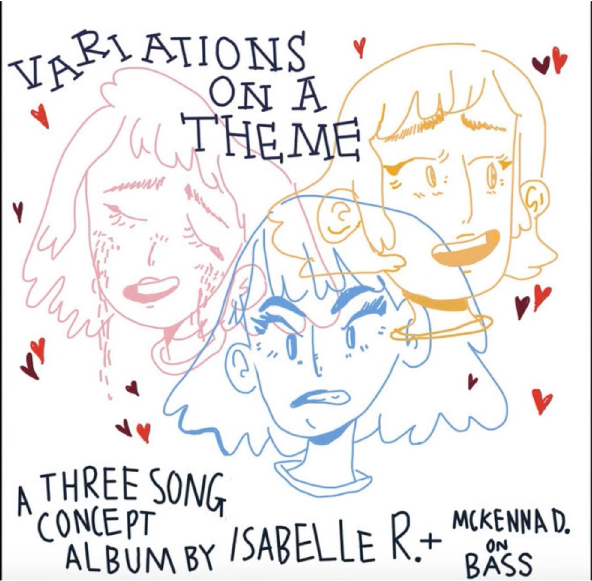
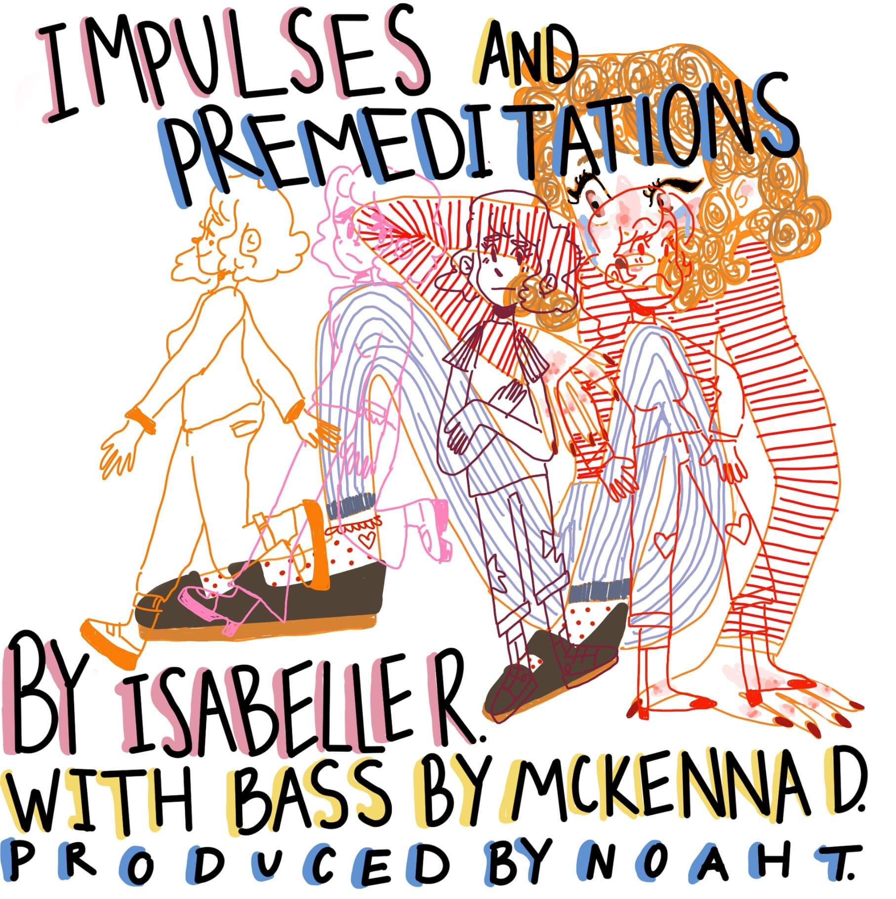
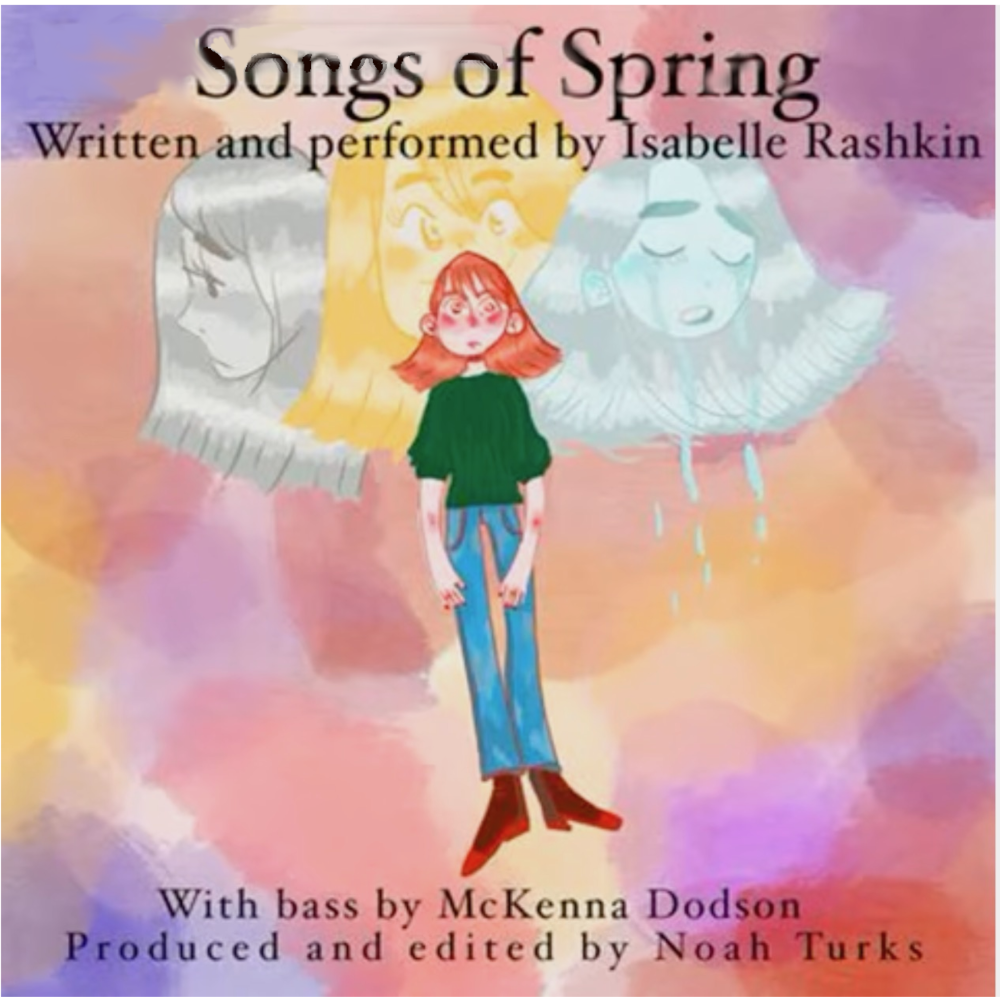
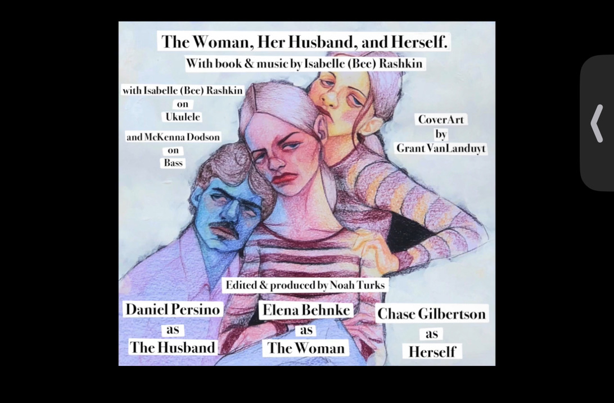

Musical Style & Process
Music has always been my way of exploring stories and emotions that words alone can’t fully express. I typically start with a single spark—a melody, a chord progression, or even a fleeting lyric—and gradually build the piece in GarageBand using ukulele, guitar, keyboard, drums, and upright bass. Collaboration is central to my process: working with talented musicians transforms initial ideas into fully realized songs.
Inspirations
My musical voice is shaped by artists who blend storytelling, humor, and emotional depth. Influences include They Might Be Giants, Garfunkel and Oates, Anaïs Mitchell, Fiona Apple, Jeanine Tesori, Mitski, Talking Heads, and Stephen Sondheim.
Songs About Write Now
First self-produced full-length album combining ukulele, synths, pedals, and upright bass. Available on all streaming platforms.

Work
Comedy single featuring Chase Gilbertson.

People in My House
Produced by Nicholas Boni. One of the few pieces without backup vocals.

Variations on a Theme
First original music project in 2020. Songs inspired later musical "The Woman Her Husband and Herself".

Impulses and Premeditations
Explores themes of aging, fidelity, and anger. Two songs used for TWHH&HS.

Songs of Spring
Final album project leading to "The Woman, Her Husband and Herself". Most tracks carried over to the musical.

The Woman Her Husband and Herself
Original cast album for the musical produced in Milwaukee, July 2021. Starring Elena Benhke, Chase Gilbertson, and Dan Persino.
